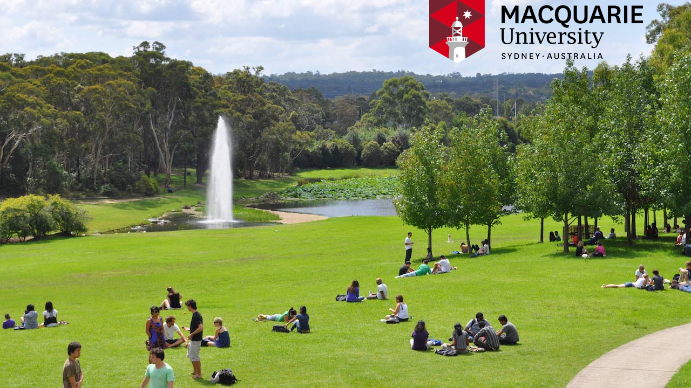

|
Recruiting
Hello, I am recruiting two postdoctoral positions and multiple Ph.D. positions in the research area of drone systems at the School of Computing of Macquarie University, located in beautiful Sydney, Australia. We look forward to your joining an exciting team conducting cutting edge research. For the two postdoctoral positions, refer to the job descriptions https://mq.wd3.myworkdayjobs.com/CareersatMQ/job/North-Ryde-Campus/Postdoctoral-Research-Fellow_R000002224-1 (due March 13) and https://mq.wd3.myworkdayjobs.com/CareersatMQ/job/North-Ryde-Campus/Postdoctoral-Research-Fellow_R000006046-1 (due March 27). We may keep these positions open past the deadlines, so feel free to email me with inquiries. For Ph.D. positions, the descriptions in the postdoc ads explain the projects of interest. The Australian system expects Ph.D. applicants to already have a Masters Degree. Interested students should upload your CV to the link: https://forms.gle/kJkjjJvdDTKuoqTj8. You will be contacted if there is further interest. Professor Richard Han School of Computing Macquarie University https://researchers.mq.edu.au/en/persons/richard-han and https://rick1han.github.io/  |